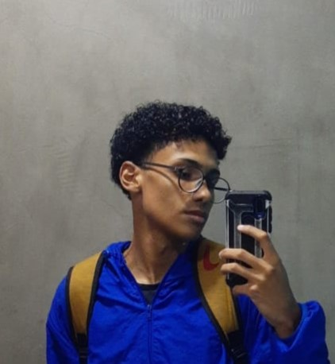

Marcus Silva

Resumo
Estou cursando desenvolvimento web e java script
e tenho o sonho de trabalhar com isso.
Educação
- Concluí o fundamental na escola Professor Plínio Damasco Penna;
- Concluí o ensino médio pela instituição Etec Albert Einstein.
Experiência Profissional
-
Trabalho atualmente na empresa Polo Comércio Internacional
como jovem aprendiz auxiliar de escritório.
Habilidades
-
Comunicativo;
-
Gosto por trabalhar em equipe;
-
Observador;
-
Pontual.
Certicações e outras conquistas
-
Possuo certificado técnico em eletrônica;
-
Possuo certificado de participação
na imersão dev 7° edição feita pela alura.